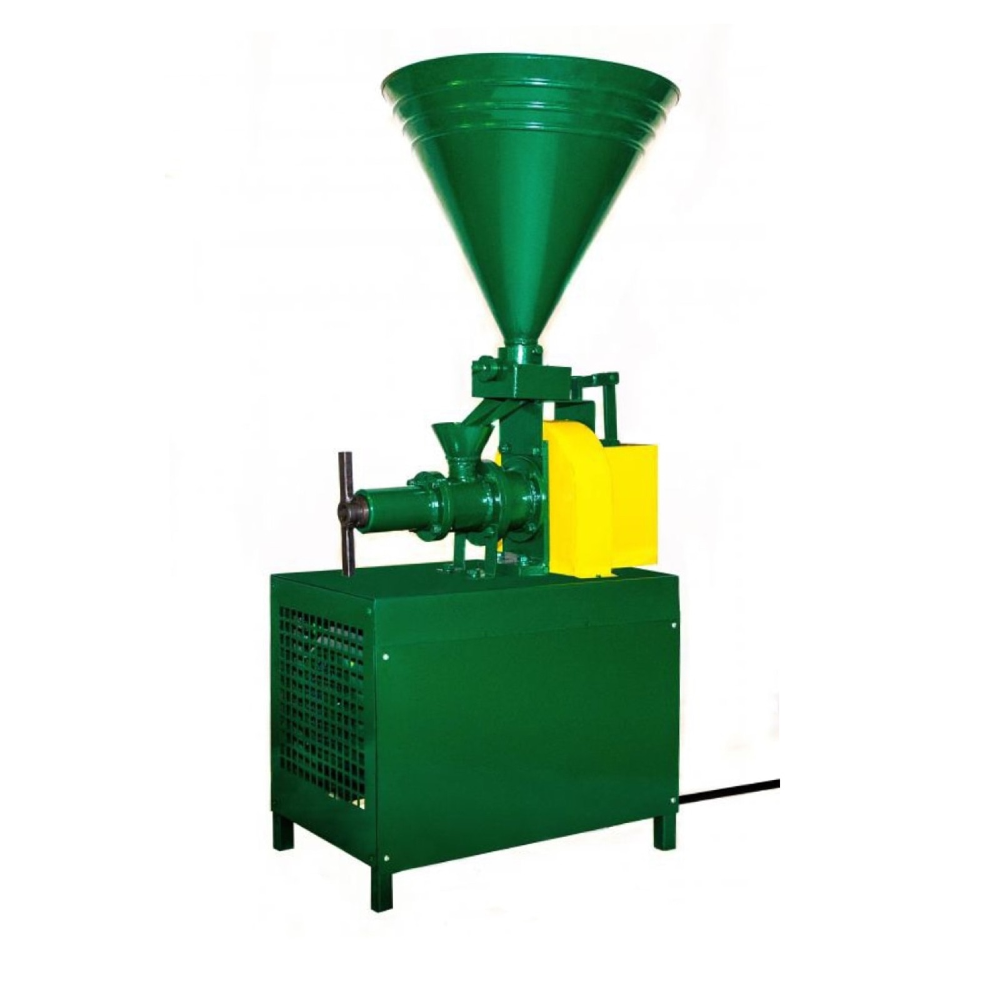
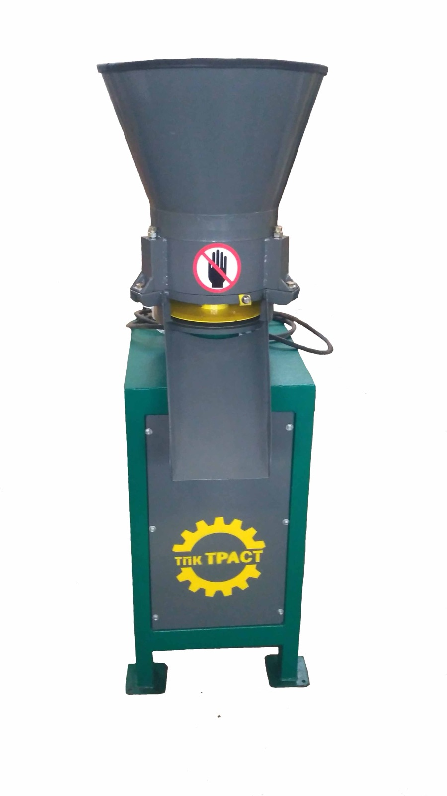
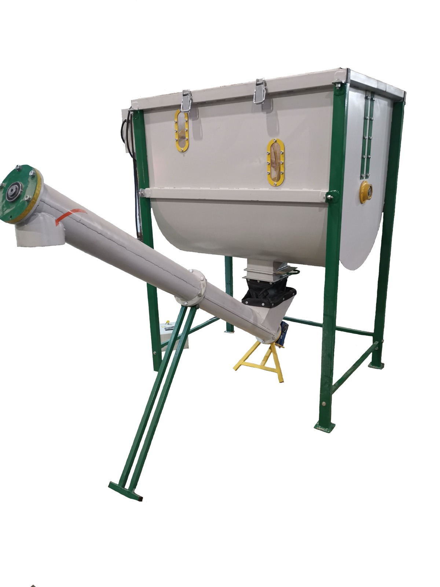
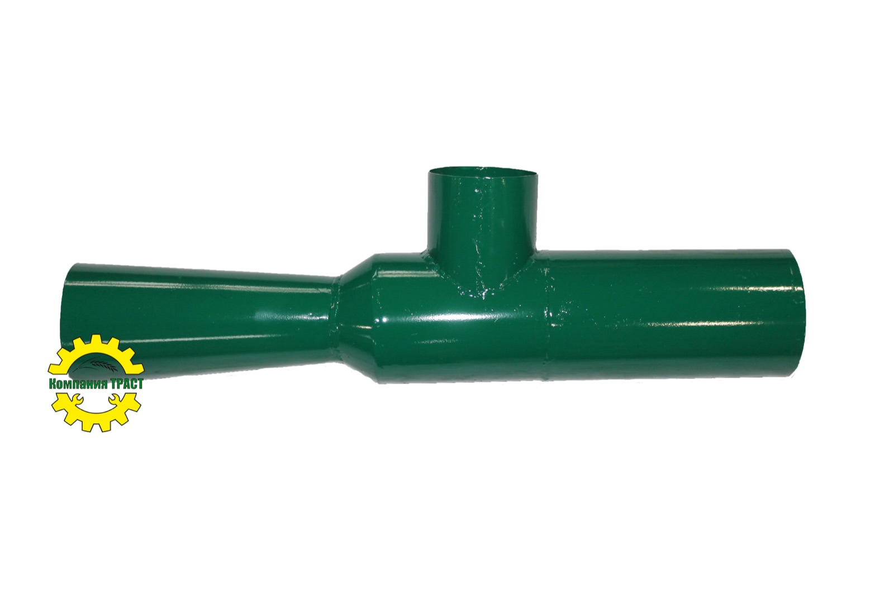
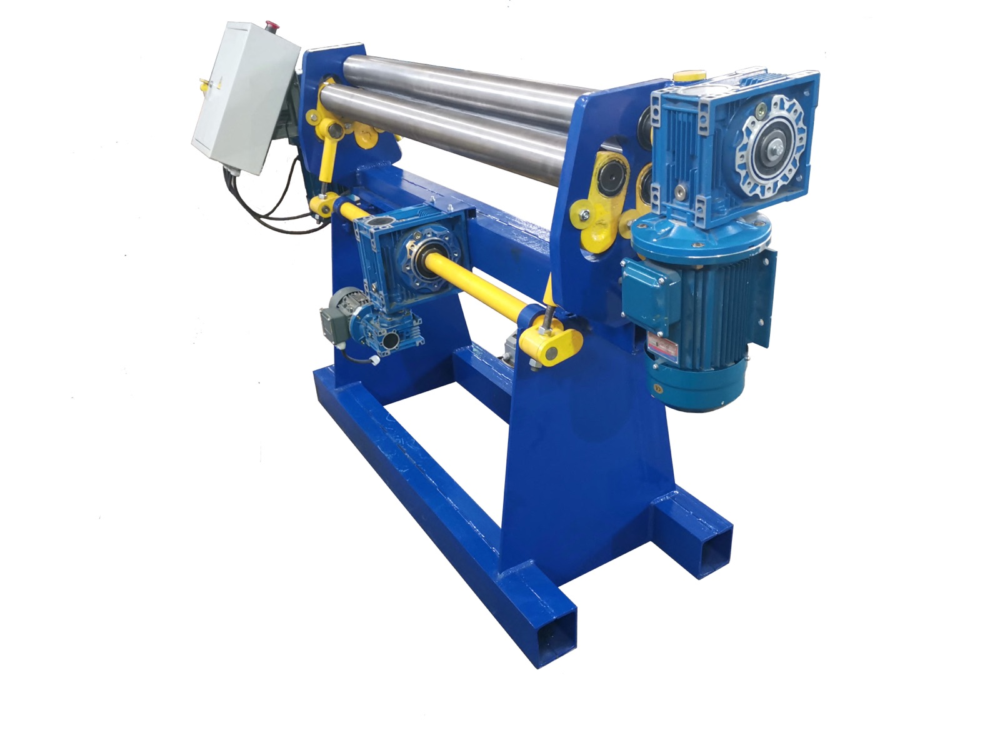
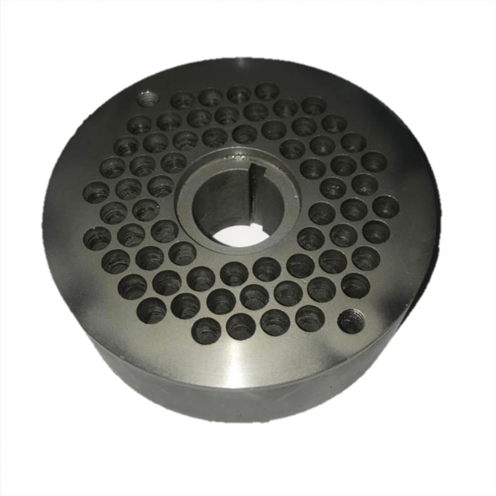
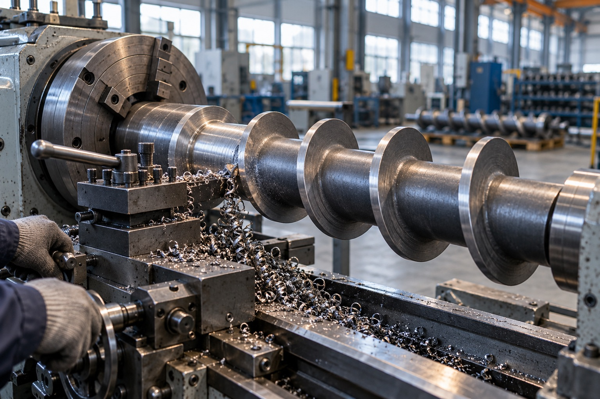

Экструдеры и грануляторы для кормов — от производителя из Миасса
Проектируем и собираем оборудование для переработки зерна с 2015 года. Гарантия год, запчасти всегда на складе, отгрузка в день заявки.
ЭК-5
- Напряжение
- 380 В
- Мощность
- 4 кВт
- Производительность
- 60–80 кг/ч
- Гарантия
- 1 год
Что мы производим

МПГ-Б ПГ-250 ГрануляторыПрессы для гранулирования комбикорма. Матрицы с фильерой от 2,5 до 8 мм.2 позиции в каталоге
МФУ-1 ПВЗ-4 Дробилки, плющилки, измельчителиДробление и плющение зерна, измельчение сена и соломы, проточные измельчители отходов.4 позиции в каталоге Смеситель
Смесители-дозаторыЛенточный смеситель со шнековым дозатором и частотным преобразователем.1 позиция в каталоге
Смеситель
Смесители-дозаторыЛенточный смеситель со шнековым дозатором и частотным преобразователем.1 позиция в каталоге

Насадки Насадки и пневмотранспортБункеры, насадки и циклоны, с которыми МФУ работает как пневмоперегружатель и аэратор.5 позиций в каталоге
ВС-1250 МеталлообработкаТрёхвалковые вальцы для гибки листа и обечаек.1 позиция в каталоге
Запчасти Запчасти и матрицыШнеки, матрицы, ролики и крепёж к нашему оборудованию — всегда в наличии.7 позиций в каталоге
ЭК-5
Кормовой экструдер, с которого мы начинали
Зерно под давлением и нагревом проходит через шнек и превращается в лёгкий пористый корм. Животные усваивают его лучше, а храниться он может до полугода.
- выше привесы и надои
- лучше усвояемость корма
- меньше расход корма на единицу продукции
- меньше болезней ЖКТ у животных
- больше яйценоскость у птицы
Ещё три машины, которые чаще всего берут фермеры

Своё производство и своя служба качества
Первые экструдеры ушли фермерам Урала в феврале 2015 года. С тех пор мы дорабатываем конструкцию по отзывам тех, кто работает на наших машинах каждый день.
- Гарантия
- 1 год на оборудование, затем постгарантийный ремонт
- Контроль
- отдел технического контроля проверяет каждую машину
- Запчасти
- шнеки, матрицы и ролики всегда на складе
- Сырьё
- почти любые зерновые и бобовые, даже солома
Как купить
Заявка или звонок
Расскажите о хозяйстве — подберём машину и комплект матриц.
Счёт
Выставим счёт с НДС для безналичной оплаты или примем наличные при получении.
Отгрузка
Отгружаем в день оформления заявки, если машина есть на складе.
Доставка
Транспортной компанией по России, своим транспортом по Челябинской области или самовывоз из Миасса.
Подберём оборудование под ваше хозяйство
Напишите, сколько у вас голов скота или какой нужен объём корма в день, — посчитаем комплект и пришлём коммерческое предложение.
Или позвоните: +7 (982) 347-75-64+7 (951) 465-01-30
Пензин Андрей Валерьевич, отдел продаж